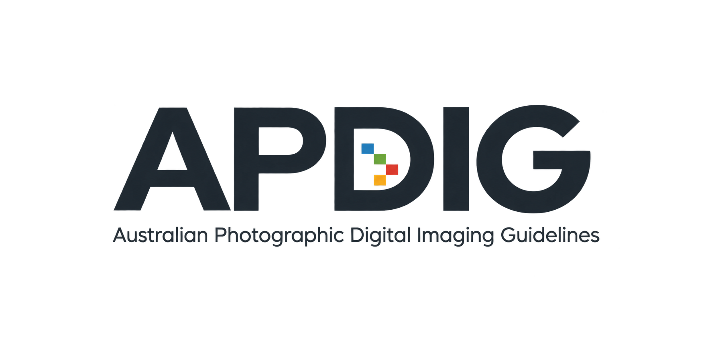

Version 1.8
27 November 2023
1. Updated software references.
2. Updated file delivery recommendations.
3. Endorsed by Image Makers Association Australia.

1. Updated software references.
2. Updated file delivery recommendations.
3. Endorsed by Image Makers Association Australia.
1. Updated software references.
2. Removed outdated links.
1. Updated software references.
2. Updated links.
3. 15 year anniversary (2004-2019).
1. Amended delivery options to include USB Flash Drives and cloud services (thanks to Dan McColl).
1. Added new Australian Standard for offset printing AS/ISO 12647-2.
2. Updated links and software references.
3. Removed book references.
4. Replaced reference to CD/DVD with optical disc.
5. 10 year anniversary (2004-2014).
1. Updated references to software and books.
1. New name APDIG (Australian Photographic Digital Imaging Guidelines)
to widen industry endorsement.
2. Added information for supplying files to Prolabs.
3. Minor typo fixes.
4. Now endorsed by ACMP, AIPP and PICA.
1. Added recommendation for RAW capture.
2. More information on CMYK.
1. First public release of APDIG as ACMP Digital Guidelines.
1. ACMP Digital Guidelines.